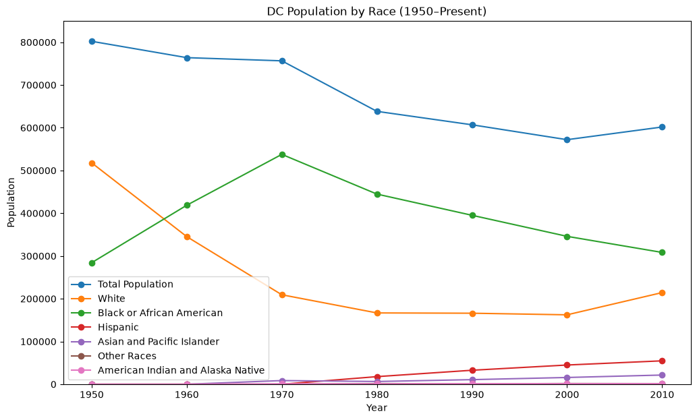
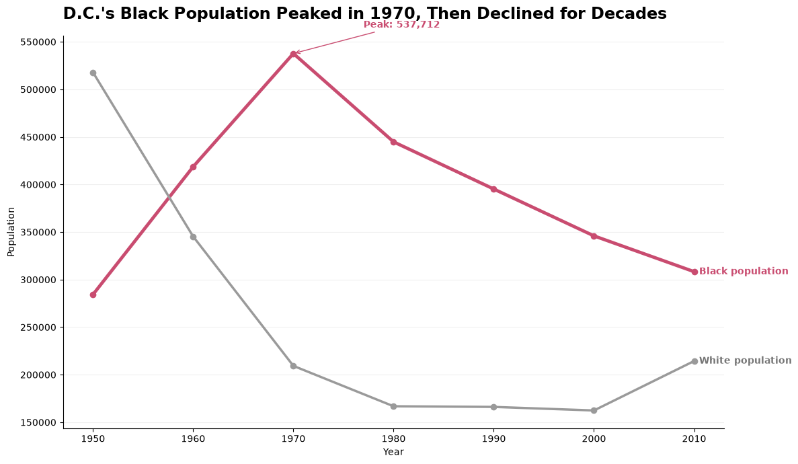

import pandas as pd
import matplotlib.pyplot as pltWho Calls D.C. Home?
How visualization can shape the story of a changing city
The Sole of D.C.
Washington, D.C. is known for its monuments. But who makes the city what it is? Washington, D.C. is home to some of our nation’s most famous monuments and historic museums. Yet, people often overlook the neighborhoods, communities, and generations of culture that the city is truly made of. Since moving to D.C. for college, I have gotten to experience different parts of the city and learn more about the cultures and communities that surround me. For this project, I wanted to look beyond the numbers and explore how demographic data can tell the story of a changing D.C., and how poor visualization choices can make that story harder to understand.
Looking Beyond the Monuments
D.C.’s population has changed dramatically over time, and those changes have helped shape the communities and cultures that make up the city today.
To understand that change, I found a visualization from the Sustainable DC 2.0 Plan showing D.C.’s population by race over time. The data tells an important story—but the visualization makes that story harder to see.
Before looking at my redesign, what story do you see in the original chart?
The Original View
The original visualization attempts to show several decades of demographic change in a single chart. Before breaking it apart, I wanted to experience the visualization the way any reader would see it for the first time.
Take a second to look at the chart. Where does your eye go first, and what story do you think it is trying to tell?
TipKeep This in Mind 👀
Good data does not automatically mean good storytelling. As you look at the original visualization see what you want to know more of!

Original visualization from the Sustainable DC 2.0 Plan, District of Columbia.
Recreating the Original
Before redesigning the visualization, I first recreated the original chart in Python. This allowed me to better understand both the data behind the visualization and the design choices that shaped how the story was presented.
data = {
"Year": [1950, 1960, 1970, 1980, 1990, 2000, 2010],
"Total Population": [802178, 763956, 756510, 638333, 606900, 572059, 601723],
"White": [517865, 345263, 209272, 166803, 166131, 162383, 214367],
"Black or African American": [284313, 418693, 537712, 444808, 395213, 345958, 308315],
"Hispanic": [0, 0, 0, 17777, 32710, 44953, 54749],
"Asian and Pacific Islander": [0, 0, 8570, 6415, 10734, 15792, 21504],
"Other Races": [0, 0, 0, 1576, 860, 1670, 1451],
"American Indian and Alaska Native": [0, 0, 956, 954, 1252, 1303, 1337]
}
df = pd.DataFrame(data)
df| Year | Total Population | White | Black or African American | Hispanic | Asian and Pacific Islander | Other Races | American Indian and Alaska Native | |
|---|---|---|---|---|---|---|---|---|
| 0 | 1950 | 802178 | 517865 | 284313 | 0 | 0 | 0 | 0 |
| 1 | 1960 | 763956 | 345263 | 418693 | 0 | 0 | 0 | 0 |
| 2 | 1970 | 756510 | 209272 | 537712 | 0 | 8570 | 0 | 956 |
| 3 | 1980 | 638333 | 166803 | 444808 | 17777 | 6415 | 1576 | 954 |
| 4 | 1990 | 606900 | 166131 | 395213 | 32710 | 10734 | 860 | 1252 |
| 5 | 2000 | 572059 | 162383 | 345958 | 44953 | 15792 | 1670 | 1303 |
| 6 | 2010 | 601723 | 214367 | 308315 | 54749 | 21504 | 1451 | 1337 |
What Are We Looking At?
Each row represents a point in D.C.’s demographic history. Before even creating the visualization, the numbers hint at a major shift: the populations of different racial groups did not change in the same direction or at the same rate.
plt.figure(figsize=(12, 7))
plt.plot(df["Year"], df["Total Population"], marker="o", label="Total Population")
plt.plot(df["Year"], df["White"], marker="o", label="White")
plt.plot(df["Year"], df["Black or African American"], marker="o",
label="Black or African American")
plt.plot(df["Year"], df["Hispanic"], marker="o", label="Hispanic")
plt.plot(df["Year"], df["Asian and Pacific Islander"], marker="o",
label="Asian and Pacific Islander")
plt.plot(df["Year"], df["Other Races"], marker="o", label="Other Races")
plt.plot(df["Year"], df["American Indian and Alaska Native"], marker="o",
label="American Indian and Alaska Native")
plt.title("DC Population by Race (1950–Present)")
plt.xlabel("Year")
plt.ylabel("Population")
plt.ylim(0, 850000)
plt.legend()
plt.show()
What’s Getting Lost?
At first glance, this chart contains a lot of information, but that is also part of the problem. With seven lines competing for attention, I found myself looking back and forth between the graph and the legend just to figure out which line represented each group.
The large total population values also dominate the scale, pushing several smaller population groups toward the bottom of the chart. Their trends are technically included, but they are much harder to see.
Recreating the Graph
Instead of asking the reader to follow seven competing lines at once, I wanted my redesign to create a clear visual hierarchy and make the biggest demographic shifts easier to see.
My goal was not to remove information just because it was complicated, but to make the most important patterns easier to understand at a glance.
fig, ax = plt.subplots(figsize=(12, 7))
ax.plot(
df["Year"],
df["Black or African American"],
marker="o",
linewidth=3.5,
color="#C94C70"
)
ax.plot(
df["Year"],
df["White"],
marker="o",
linewidth=2.5,
color="#9A9A9A"
)
ax.set_title(
"D.C.'s Black Population Peaked in 1970, Then Declined for Decades",
fontsize=17,
fontweight="bold",
loc="left",
pad=18
)
ax.set_xlabel("Year")
ax.set_ylabel("Population")
ax.grid(axis="y", alpha=0.2)
ax.spines["top"].set_visible(False)
ax.spines["right"].set_visible(False)
ax.text(
2010.5,
308315,
"Black population",
color="#C94C70",
fontweight="bold",
va="center"
)
ax.text(
2010.5,
214367,
"White population",
color="#777777",
fontweight="bold",
va="center"
)
ax.annotate(
"Peak: 537,712",
xy=(1970, 537712),
xytext=(1977, 565000),
arrowprops=dict(
arrowstyle="->",
color="#C94C70"
),
color="#C94C70",
fontweight="bold"
)
plt.tight_layout()
plt.show()
New and improved graph!!
From Information to a Story
When I first looked at the original visualization, I realized that it contained a lot of information but did not give me a clear idea of what I was supposed to take away from it. With seven different lines competing for attention, I constantly had to look back at the legend to figure out which population group I was looking at. The total population also dominated the scale, causing several of the smaller groups to become compressed near the bottom of the chart. The information was there, but the story was difficult to find.
For my redesign, I focused on visual hierarchy, color, direct labeling, and reducing unnecessary visual clutter. Instead of trying to make every line equally important, I focused on the Black population and used the White population as a historical comparison. I used pink to draw attention to the main story while keeping the comparison line neutral. I also removed the legend, directly labeled each line, and annotated the Black population’s peak in 1970.
These changes make the visualization easier to understand because the reader no longer has to search for the main takeaway. The title, color, and annotation work together to guide the reader through the data and show how dramatically D.C.’s demographics have changed over time.